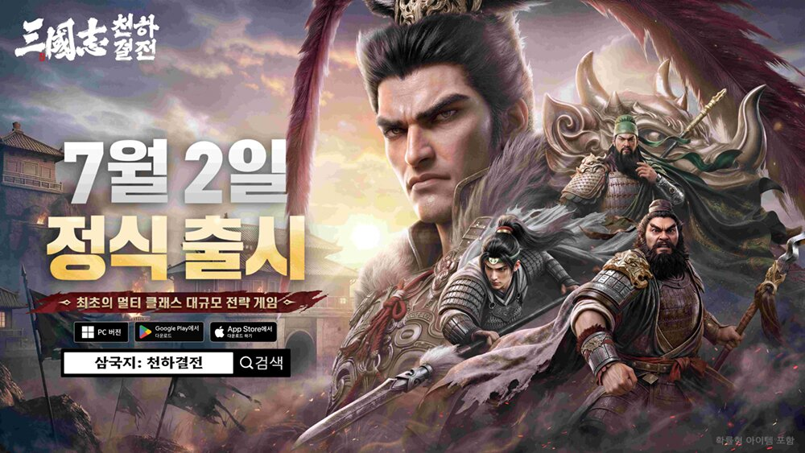
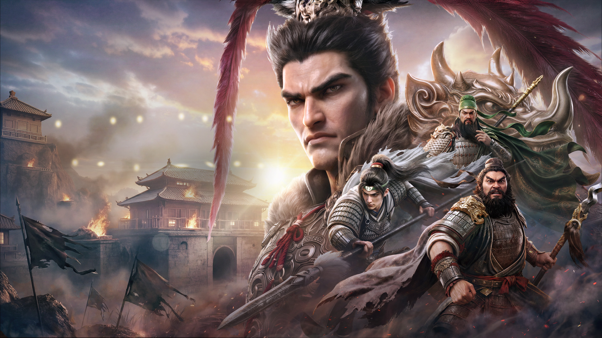
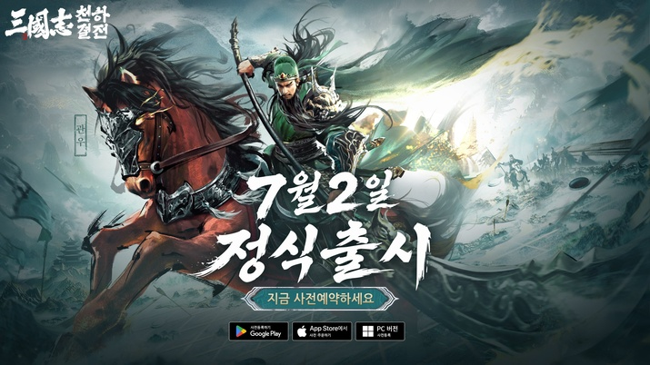
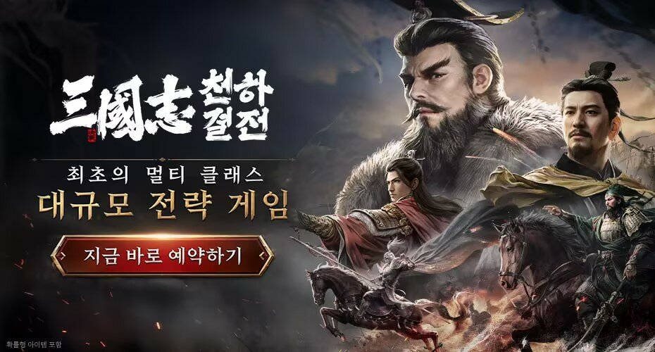

삼국지 천하결전 6대 직업 성향 추천 (출시 초기 정리)
지난 글에서 삼국지: 천하결전 초반 세팅을 다뤘는데, 이번엔 한 걸음 더 들어가서 6대 직업을 무과금 기준으로 어떻게 나눠 봐야 하는지를 정리해봤습니다. 다만 먼저 짚고 갈 게 있습니다.
최종 업데이트: 2026.07.05
이 게임은 7월 2일 정식 출시라 지금은 출시 3~4일 차입니다. 아직 확정된 S/A/B급 티어표가 커뮤니티·공략에 형성되지 않은 시점이라, 이 글에서 순위형 티어표는 다루지 않습니다. 아래 내용은 공식 소개와 초기 커뮤니티·공략 여론을 종합한 '성향 분류'이며, 밸런스 패치가 이어지면 얼마든지 바뀔 수 있다는 점을 참고해서 봐주시면 좋겠습니다.

"최초의 멀티 클래스 대규모 전략 게임"이라는 카피가 이 게임 직업 시스템의 정체성을 그대로 보여줍니다.
이미지: 삼국지 천하결전 공식(인벤 재게시)
왜 지금 확정 티어를 안 다루는가
직접 플레이하면서 커뮤니티 반응도 같이 살펴봤는데, 아직 "이 직업이 확실히 세다"고 말할 수 있는 단계는 아니더라고요. 출시 사흘 만에 나온 의견들은 대부분 튜토리얼과 초반 며칠 체감을 근거로 한 것이라, 동맹전이나 대규모 공성 같은 실전 데이터가 쌓이려면 아직 시간이 필요합니다. 그래서 이 글은 순위를 매기는 대신, 공식이 설명한 역할과 초반 커뮤니티에서 반복해서 나오는 성향 평가를 겹쳐서 "지금 시점에 이렇게 골라두면 무난하다"는 정도로 정리했습니다.
한 가지 더 짚을 부분은, 이 직업이 캐릭터를 고정하는 전직이 아니라는 점입니다. 시즌이 바뀔 때마다 역할을 다시 고를 수 있는 구조라서, 지금 잘못 골라도 되돌릴 수 없는 선택은 아니에요. 그래서 이번 시즌엔 무난한 직업으로 적응하고, 게임을 파악한 다음 시즌에 원하는 방향으로 옮기는 식의 접근도 충분히 가능합니다.
• • •
6대 직업 성향 분류 — 안정형·성장형·PvP형·숙련형
직업 하나하나를 역할로만 보면 감이 잘 안 오는데, 초반 커뮤니티·공략 여론을 모아보면 대략 네 갈래 성향으로 묶이더라고요. 표로 정리하면 이렇습니다.
| 직업 | 성향 | 역할 | 대표 무장 |
|---|---|---|---|
| 진군(鎮軍) | 안정형 | 주력 공격·전면 전투 담당. 탱커와 딜러를 겸함 | 마초 |
| 청낭(靑囊) | 안정형 | 치료·유지력 지원. 장기전·동맹전의 핵심 | 채문희 |
| 천공(天工) | 성장형 | 공성 병기 제작과 요새 공략에 특화 | 황월영 |
| 병참(兵站) | 성장형 | 자원 수급과 동맹 운영을 뒷받침 | 등애 |
| 신행(神行) | PvP형 | 기동·은신 기반 기습. 대인전 딜러 | 감녕 |
| 기좌(奇佐) | 숙련형 | 계략·함정으로 전장을 교란하는 전략가 | 곽가 |
표에서 보시듯 안정형(진군·청낭)은 역할이 직관적이라 배우는 데 시간이 안 걸립니다. 성장형(천공·병참)은 전투보다 자원·건설 쪽에 힘을 싣는 성격이라 성장 속도에서 이점이 있다는 평이 많고요. PvP형(신행)은 대인전에서 두각을 보인다는 초반 반응이 꾸준한데, 그만큼 상대 타이밍을 읽는 감이 필요합니다. 숙련형(기좌)은 계략·함정 계열이라 전장 전체를 읽는 눈이 있어야 제 몫을 하는 대신, 익숙해지면 판을 뒤집는 힘이 크다는 게 초기 평가의 공통된 흐름입니다.

직업마다 대표 무장이 딱 정해져 있어서, 어떤 성향을 고르든 그 얼굴이 되는 무장부터 눈에 익혀두면 이해가 빠릅니다.
이미지: 삼국지 천하결전 공식
• • •
무과금이면 지금 뭘 고르는 게 나을까
결론부터 말하면 진군이나 청낭으로 시작하는 걸 추천합니다. 이유는 간단한데, 두 직업 다 동맹에 들어가는 순간부터 뭘 해야 할지 감이 바로 옵니다. 진군은 앞장서서 부딪히는 역할이라 손에 익히기 쉽고, 청낭은 치료·유지를 맡아 동맹전에서 항상 자리가 있는 포지션이에요. 무과금이라고 이 두 직업이 불리한 구조는 아닙니다 — 애초에 이 게임이 자원·가속·VIP를 안 팔겠다고 밝힌 만큼, 직업 선택은 지갑 사정보다 어떤 플레이가 손에 맞는가로 갈리는 쪽입니다.
"성장을 서두르고 싶으면 천공·병참, 대인전이 좋으면 신행, 판을 읽는 재미를 원하면 기좌로 가면 됩니다."
성장 속도를 우선하고 싶다면 천공이나 병참이 초반 커뮤니티에서 꾸준히 언급되는 조합입니다. 둘 다 전투보다 건설·자원 쪽에 힘을 쓰는 성향이라, 접속할 때마다 조금씩 쌓이는 걸 좋아하는 플레이스타일에 맞습니다. 대인전 쪽으로 방향을 잡고 싶으면 신행이 기동·은신 기반이라 상대 진영을 흔드는 재미가 있다는 평이 많고요. 반대로 기좌는 지금 단계에서 무턱대고 고르기보다, 게임을 어느 정도 파악한 뒤에 옮겨가는 편이 낫다고 봅니다. 계략·함정 계열은 전장 전체를 보는 눈이 필요해서, 처음부터 붙잡으면 오히려 헛손질이 많아질 수 있어요.
• • •
직업 고른 다음 — 무과금 육성 순서
직업을 정했다면 그다음이 더 중요합니다. 이 게임에서 무과금이 신경 써야 할 건 무장 등급보다 조합과 순서더라고요. 직접 굴려보니 육성 우선순위는 대략 이렇게 잡는 게 막힘이 적었습니다.
| 순서 | 해야 할 일 |
|---|---|
| 1순위 | 주력 무장 한둘을 정해 자원을 몰아준다 |
| 2순위 | 그 무장의 핵심 전법을 우선 강화한다 |
| 3순위 | 고른 직업 역할에 맞춰 편성을 최적화한다 |
| 4순위 | 장비·특성을 다듬는다 |
| 5순위 | 동맹전에 꾸준히 참여한다 |
여러 무장을 조금씩 나눠 키우는 것보다, 이 순서대로 한 명을 확실히 밀어야 초반 전투에서 체감이 빠릅니다. 병종 상성도 챙길 부분인데, 보병·궁병·기병이 서로 물고 물리는 순환 구조라 한쪽 병종만 계속 밀어붙이면 상대 조합에 그대로 당하기 쉽습니다. 구체적인 상성 배율까지는 인게임에서 직접 확인하는 게 정확하고, 여기서는 "한 병종만 고집하지 않는다" 정도로만 기억해두면 됩니다.
초반에 막히는 지점도 하나 있습니다. 군왕전 5레벨에서 6레벨로 넘어가는 구간에서 자원이 확 부족해지는 걸 체감했는데, 이때 무리하게 건물을 동시에 올리려 하지 말고 자원 수급 건물부터 먼저 채워두면 넘어가기가 한결 수월합니다.

출시 직후라 자원·전법 조합 하나하나가 아직 손에 안 익어도, 순서만 잡아두면 따라가는 데 큰 무리는 없습니다.
이미지: 삼국지 천하결전(게임메카 보도)
• • •
과금 구조는 어떻게 봐야 하나

'쩐'략이 아닌 '전'략으로 승부하라는 게 이 게임이 내세우는 문구인데, 실제로 자원·가속·VIP를 안 파는 쪽으로 방향을 잡은 건 맞습니다.
이미지: 삼국지 천하결전 공식(인벤 재게시)
직업 얘기를 하다 보면 결국 과금 얘기가 같이 나오는데, 여기서 정직하게 짚어야 할 부분이 있습니다. 공식이 내세우는 세일즈포인트는 "자원 판매 없음·가속 판매 없음·VIP 시스템 없음"이라 무과금 지향인 건 맞습니다. 다만 성장·옥석 패키지는 1,500원부터 149,000원까지 별도로 존재해서, "과금 요소가 전혀 없다"고 하면 정확하지 않습니다. 흔히 SLG에서 무과금을 힘들게 하는 자원·가속·VIP 판매가 없는 구조라는 게 이 게임의 실제 강점이라고 보는 게 더 맞는 표현입니다.
그래서 무과금 입장에서는 직업 선택이나 조합 운영으로 그 격차를 좁히는 게 핵심입니다. 직접 해본 기준으로는 직업·연맹 시너지가 무장 등급보다 체감이 훨씬 크다는 게 지금까지의 결론입니다. 등급 낮은 무장이라도 직업 역할에 딱 맞게 편성하면 동맹전에서 제 몫을 하는 반면, 등급만 높고 역할이 안 맞으면 오히려 애매한 경우가 많았습니다.
정리하자면 지금은 순위가 아니라 성향으로 접근할 시점입니다. 배우기 쉬운 순서로 보면 안정형(진군·청낭)이 먼저 손에 익고, 그다음 성장형(천공·병참), PvP형(신행), 숙련형(기좌) 순으로 이해도가 필요해지는 흐름이라고 보면 됩니다. 직업은 시즌마다 다시 고를 수 있으니 지금 안정형으로 적응하고 차근차근 옮겨가도 늦지 않습니다. 출시 초반 성향 평가는 앞으로 밸런스 패치·실전 데이터가 쌓이면서 계속 바뀔 텐데, 그 갱신 상황도 이어서 다뤄보겠습니다.
초반 세팅과 사전예약 보상은 지난 글에서 다뤘습니다 → 삼국지 천하결전 무과금 시작 가이드 (6대 직업·초반 세팅)
#삼국지천하결전 #삼국지천하결전직업 #진군청낭기좌천공신행병참 #SLG신작게임추천 #모바일SLG #무과금추천